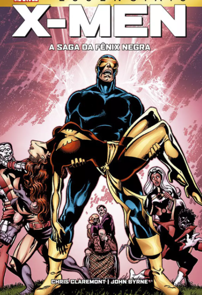

X-Men: Saga da Fênix Negra
A Saga da Fênix Negra é um arco de história dos X-Men, publicado pela Marvel Comics, contando sobre a história de Jean Grey e a Força Fênix. Foi escrita por Chris Claremont com arte de Dave Cockrum e John Byrne.
A história se passa em um momento em que os X-Men estão lutando contra a ameaça do Império Shi’ar. Jean Grey é enviada em uma missão para o espaço, onde ela é atingida por uma explosão de energia cósmica. A energia desperta a Força Fênix, uma entidade cósmica que se liga a Jean Grey.
A Força Fênix concede a Jean Grey poderes ilimitados, mas também a corrompe. Jean Grey se transforma na Fênix Negra, uma entidade poderosa e destrutiva. A Fênix Negra comete uma série de atos de violência, incluindo a destruição de um planeta inteiro.
A Força Fênix concede a Jean Grey poderes ilimitados, mas também a corrompe. Jean Grey se transforma na Fênix Negra, uma entidade poderosa e destrutiva. A Fênix Negra comete uma série de atos de violência, incluindo a destruição de um planeta inteiro.
Entre as melhores HQs de todos os tempos, a Saga da Fênix Negra é um dos arcos de história mais importantes dos X-Men. A história é uma exploração da natureza do poder e da corrupção, e é uma reflexão sobre o que significa ser um herói.
Comprar